Complex routines, full scene controls, creation and save recovery. The approved Compact visual system stays in place; these studies exercise the cases that determine how the shared components should work.
Starting events, global conditions and actions are open. Nested All/Any/Not retain their structure; branches are checked in order. Arrows reorder actions and branches without dragging. A timer start links to the action that replaces it. Try this routine ↗
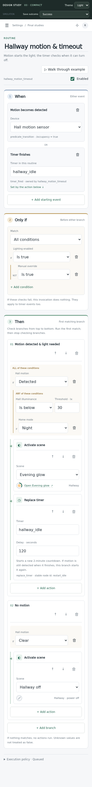
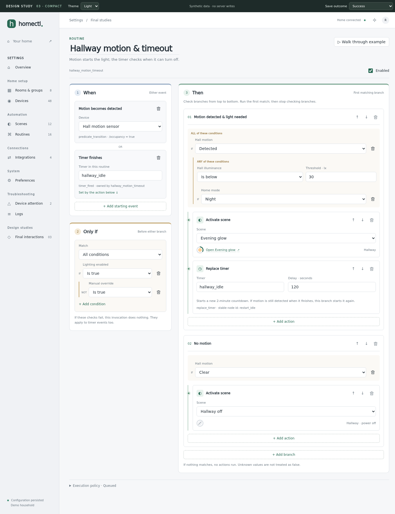
The ordinary scene editor retains its approved rows/cards. This study opens the more complex modes: set values, follow a device with a brightness multiplier, or resolve another scene for the same target. Missing sources remain repairable. Try the scene controls ↗
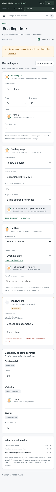
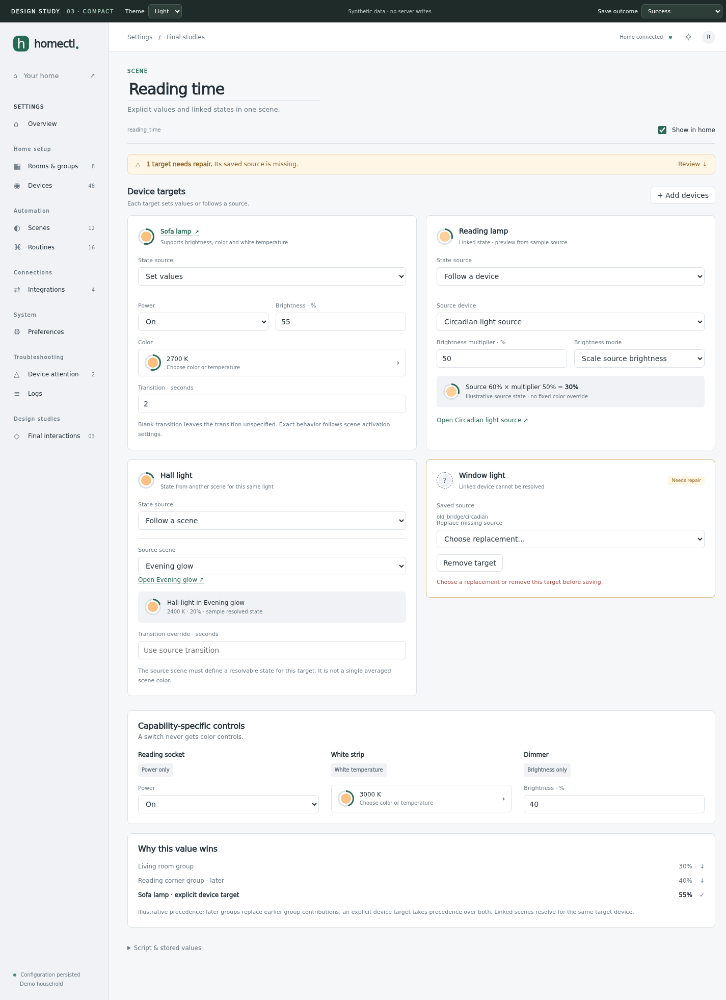
The color dialog combines a live preview, presets and exact values. White-only lights get temperature controls. Cancel leaves the draft alone. The 240-entry picker retains selected entities across searches, including long names, and includes loading/no-results/retry studies.
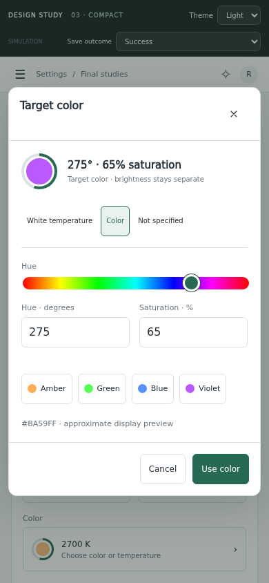
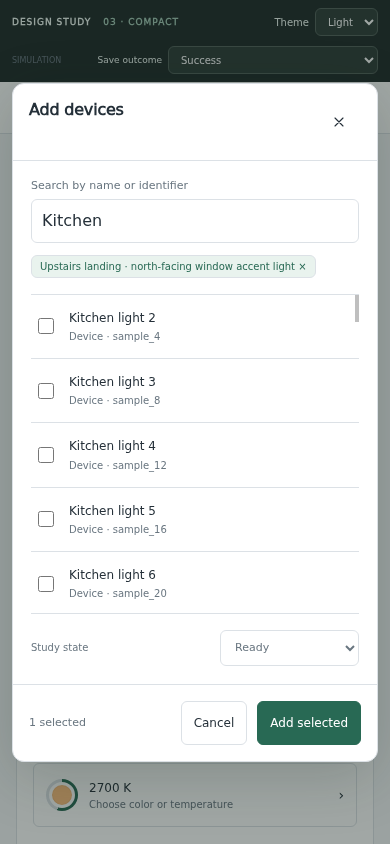
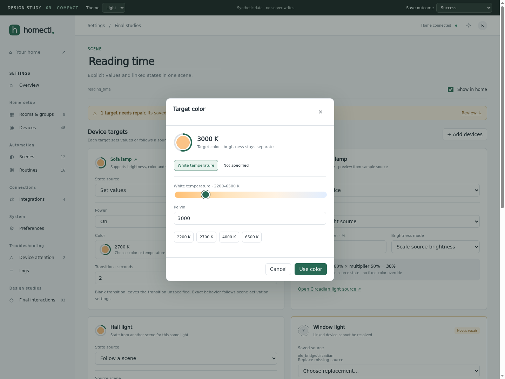
Creation uses the same editor and bottom action placement. Follow Create a scene, add targets and create it; the originating routine returns with its name and trigger intact and the new scene selected. Creating a scene does not activate it. Try the creation journey ↗
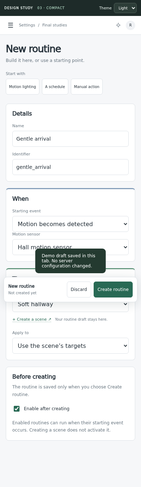
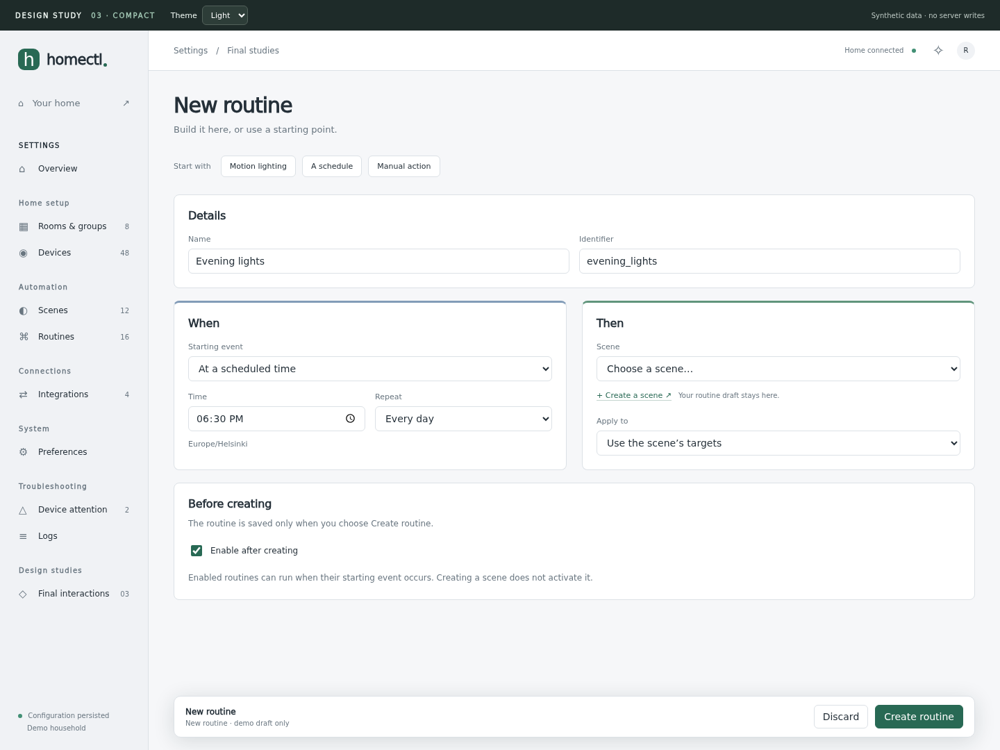
Validation focuses the field. Failed saves retain edits and offer retry. Conflicts show saved and draft values; Keep my draft does not overwrite anything. Applied-but-not-persisted changes have a persistent warning across pages. Try the save outcomes ↗
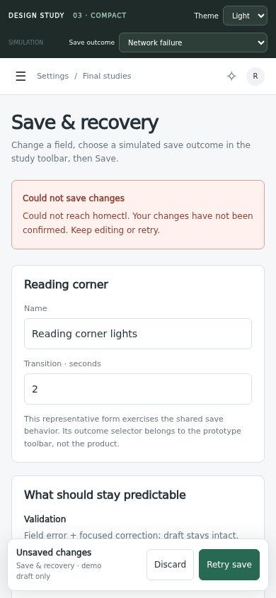
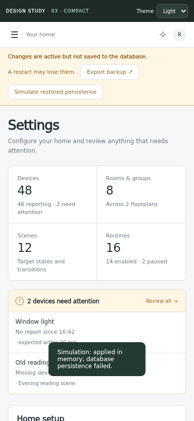
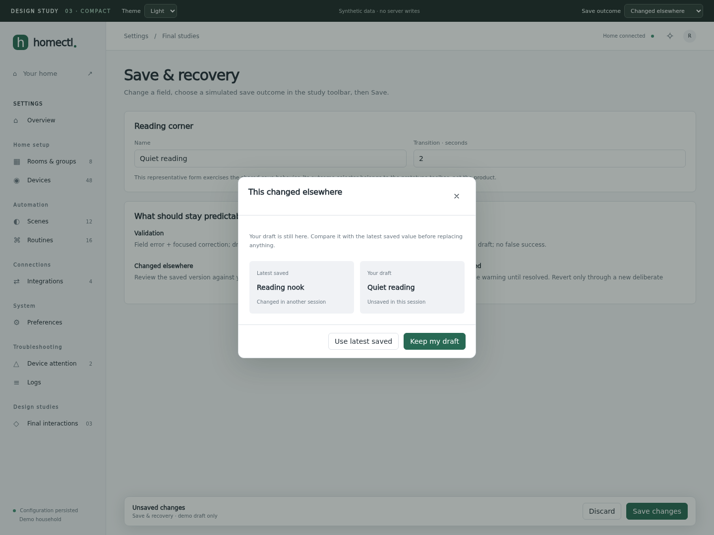
The structural cases now have concrete examples. The handoff records native routine mapping, real scene defaults, collection coverage, draft lifecycle, persistence/conflict contracts and the health/preference work. After this review, ordinary forms can be built from the shared system and reviewed as working screens.
Read the handoff ↗ · Browser checks and limitations ↗ · Implementation sequence ↗
The routine fixture is type-checked against generated bindings. The prototype does not serialize edited definitions, run automations, validate against a real catalog or implement persistence. It retains draft values in the tab; reloading discards them. Production acceptance still includes server tests, full keyboard/screen-reader review and schema round trips.